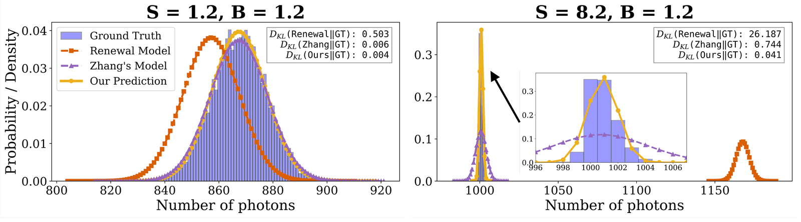

Accuracy
The photon count, finally right.
Against the sequential gold standard, renewal theory misplaces the count and the best prior model misjudges its spread; MaRS matches both, with a grid-averaged KL 30× below the best prior model’s.
